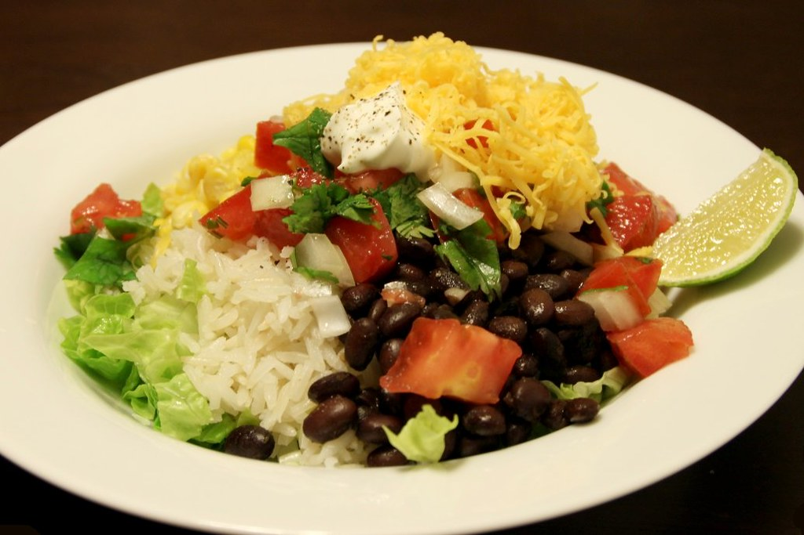

This is a very simple but delicious dinner. You can throw it together on a busy week night, with whatever you've got avaialble in your pantry. There's literally hundreds of variations, but we usually have at least, rice, beans, and a protein. Use the following recipe as a guide, and get creative in making your own twist on it!
"Burrito bowl" by sarahstierch is licensed under CC BY 2.0 
 .
.